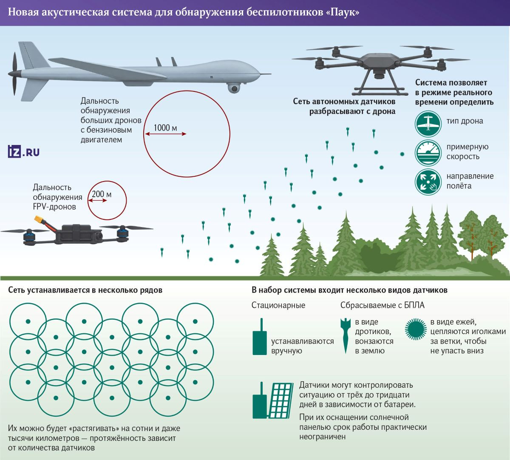

Trang chủ/ Thời sự
Nga vừa công bố một hệ thống phát hiện máy bay không người lái mang tên Spider (Паук), được phát triển bởi một công ty thành viên thuộc Trung tâm Khoa học và Công nghiệp Ushkuynik. Theo thông tin từ Izvestia và các nguồn liên quan cuối tháng 9/2026, hệ thống Spider đã hoàn tất nghiên cứu thử nghiệm và đang chuẩn bị đưa vào sản xuất hàng loạt. Khác với các giải pháp dựa chủ yếu vào radar hay trinh sát điện tử, hệ thống Spider tận dụng đặc điểm âm thanh và tiếng ồn do UAV phát ra để nhận diện mục tiêu, kết hợp mạng cảm biến phân tán với khả năng xử lý bằng mạng nơ-ron. Nguyên lý hoạt động của hệ thống Spider dựa trên việc thu thập tín hiệu âm thanh từ môi trường xung quanh thông qua mạng lưới cảm biến tự trị. Khi phát hiện tiếng ồn đặc trưng của động cơ hoặc cánh quạt UAV, hệ thống Spider sử dụng thuật toán mạng nơ-ron để phân loại loại máy bay không người lái theo thời gian thực, sau đó truyền thông tin về trung tâm chỉ huy. Với cấu hình cảm biến bố trí nhiều lớp, hệ thống Spider còn có thể ước tính tốc độ và hướng bay của mục tiêu. Tầm phát hiện được công bố ở mức khoảng 200 mét đối với các UAV FPV nhỏ và vượt quá 1 km với những máy bay không người lái cỡ lớn sử dụng động cơ xăng. Cảm biến được thiết kế đa dạng, bao gồm loại lắp đặt thủ công, loại “mũi tên” có thể thả từ trên không để cắm xuống đất và loại “nhím” với các gai chuyên dụng bám vào cành cây, giúp nâng cao vị trí thu âm và mở rộng phạm vi phủ sóng.

Theo các nhà phát triển, tầm phát hiện FPV drone đạt tới 200 m, trong khi các UAV cỡ lớn sử dụng động cơ xăng có thể được phát hiện từ khoảng cách trên 1 km. Khi bố trí cảm biến thành nhiều hàng, tổ hợp này còn có thể xác định tốc độ và hướng di chuyển của các mục tiêu trên không. Ảnh: iz.ru
Thiết kế mô-đun là điểm mạnh nổi bật, cho phép người sử dụng lựa chọn số lượng và chủng loại cảm biến phù hợp với điều kiện địa hình cũng như quy mô khu vực cần giám sát.
Hệ thống Spider tiêu thụ năng lượng thấp, hoạt động thụ động nên khó bị phát hiện hoặc gây nhiễu so với radar chủ động.
Nhờ khả năng học máy, mạng nơ-ron có thể được huấn luyện thêm để nhận diện các mẫu UAV mới xuất hiện trên chiến trường.
Các nhà phát triển nhấn mạnh rằng hệ thống Spider có thể bổ sung cho các hệ thống giám sát hiện có, tạo thành lớp phát hiện sớm khi kết hợp với radar và cảm biến quang điện tử.
Về ưu điểm, hệ thống Spider mang lại tính sống còn cao nhờ mạng cảm biến phân tán giá thành thấp. Việc tiêu diệt toàn bộ hệ thống gần như bất khả thi vì mỗi cảm biến hoạt động độc lập và dễ dàng thay thế.
Chi phí triển khai thấp hơn nhiều so với radar chiến thuật, đồng thời hoạt động hiệu quả trong môi trường tác chiến điện tử mạnh hoặc khu vực địa hình phức tạp nơi tín hiệu radar bị nhiễu.
Khả năng thả cảm biến từ trên không giúp nhanh chóng thiết lập vùng giám sát tại các khu vực tiền tuyến hoặc cơ sở hạ tầng quan trọng.
Tuy nhiên, hệ thống Spider cũng tồn tại những hạn chế rõ rệt. Tầm phát hiện còn khiêm tốn so với radar hiện đại, dễ bị ảnh hưởng bởi tiếng ồn môi trường, gió lớn, mưa bão hoặc địa hình có nhiều vật cản.
Các UAV sử dụng động cơ điện êm ái hoặc bay ở độ cao lớn có thể giảm hiệu quả nhận diện.
Để đạt độ chính xác cao về hướng và tốc độ, cần bố trí mật độ cảm biến đủ dày, làm tăng chi phí và thời gian triển khai nếu quy mô lớn.
So với các đối thủ cùng phân khúc, hệ thống Spider nằm trong nhóm hệ thống phát hiện UAV bằng âm thanh đang phát triển mạnh trên thế giới.
Nhiều quốc gia phương Tây và Israel cũng đang nghiên cứu các mạng cảm biến âm thanh tích hợp trí tuệ nhân tạo (AI) để bổ trợ radar, nhưng ít hệ thống công khai nhấn mạnh khả năng thả cảm biến từ trên không và thiết kế mô-đun linh hoạt như hệ thống Spider.
So với các giải pháp quang học hoặc hồng ngoại, hệ thống âm thanh của Nga ít phụ thuộc vào điều kiện ánh sáng nhưng kém hơn về tầm xa.
Đối với các hệ thống radar nhỏ gọn chống UAV, hệ thống Spider có lợi thế về tính thụ động và chi phí thấp hơn, song không thể thay thế hoàn toàn vì thiếu khả năng đo khoảng cách chính xác và theo dõi liên tục trên phạm vi rộng.
Việc kết hợp đa cảm biến vẫn là xu hướng chung, trong đó hệ thống Spider đóng vai trò lớp cảnh báo sớm giá rẻ.
Hiện Bộ Quốc phòng Nga chưa đưa ra bình luận chính thức về hệ thống này, khiến thời điểm đưa vào biên chế thực tế vẫn